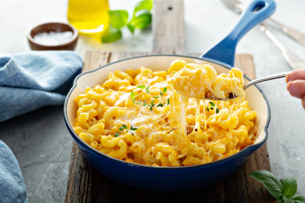

Mac and Cheese
Home

Description
Macaroni and cheese is the ultimate comfort food, cherished for its rich, creamy texture and deeply satisfying flavor profile. At its core, the dish consists of tender pasta—traditionally elbow macaroni—smothered in a smooth, velvety cheese sauce known classically as a Mornay sauce. Whether it is served as a nostalgic weeknight staple or an elevated holiday side dish, its appeal lies in the perfect contrast between the soft pasta and the gooey, melted cheese.
To prepare a classic baked version at home, start by boiling your pasta in salted water until it is just al dente. In a separate saucepan, melt butter and whisk in an equal amount of flour to create a roux, then slowly pour in warm milk while whisking continuously until the mixture thickens. Remove the pot from the heat and stir in a generous amount of freshly shredded cheeses, such as sharp cheddar and Gruyère, until completely melted. Finally, toss the cooked macaroni into the cheese sauce, transfer the mixture into a greased baking dish, top with an extra layer of cheese or buttered breadcrumbs, and bake at 375°F (190°C) for about 20 minutes until bubbling and golden brown.
Ingredients
- Pasta: 1 pound of dry elbow macaroni (or other short ridged pasta like cavatappi).
- The Cheeses: 4 to 6 cups of freshly shredded cheese. A mix of sharp Cheddar (for flavor) and Gruyère, Monterey Jack, or Mozzarella (for maximum melt and gooeyness) works best.
- The Roux (Thickener): Equal parts butter and flour (4 to 6 tablespoons each) to build the base of your cream sauce.
- Liquid Base: 4 to 5 cups of whole milk or a combination of milk and heavy cream for ultimate richness.
- Spices: Salt, black pepper, and a pinch of paprika (or cayenne) for color and subtle warmth.
- Flavor Enhancers: 1 to 2 teaspoons of dry mustard powder (which helps emulsify the cheese and brings out its sharp flavor) and a pinch of garlic powder.
- Crunchy Crust (Optional): 1 to 2 cups of Panko breadcrumbs mixed with 2 tablespoons of melted butter to sprinkle over the top before baking.
Steps
- Boil the pasta: Cook 1 pound of macaroni in a large pot of salted boiling water until it is just under al dente (about 1 to 2 minutes less than the package instructions). It will finish cooking in the oven.
- Drain and cool: Drain the pasta thoroughly and set it aside.
- Preheat the oven: Set your oven to 375°F (190°C) and lightly grease a 9x13-inch baking dish.
- Build the roux: Melt 4 to 6 tablespoons of butter in a large saucepan over medium heat. Whisk in an equal amount of flour and cook for 1 to 2 minutes to remove the raw flour taste.
- Whisk in liquids: Slowly pour in 4 to 5 cups of warm milk (or cream combo) while whisking constantly to prevent lumps. Simmer for a few minutes until the sauce slightly thickens and coats the back of a spoon.
- Season the base: Turn off the heat. Whisk in your salt, pepper, paprika, and dry mustard powder.
- Meltdown the cheese: Stir in about three-quarters of your shredded cheese mix, one handful at a time, until completely melted and smooth.
- Combine: Toss the cooked pasta into the warm cheese sauce until every noodle is fully coated.
- Layer it up: Pour half of the mac and cheese into your prepared baking dish. Sprinkle a layer of the remaining cheese over it, then pour the rest of the pasta on top.
- Add toppings: Finish with the last of the cheese. If you are using buttered Panko breadcrumbs, sprinkle them evenly over the top.
- Bake until golden: Bake uncovered for 20 to 25 minutes until the sauce is bubbling around the edges and the top crust is beautifully golden brown.
- Rest and serve: Let it sit for 10 minutes before serving so the sauce can set up.